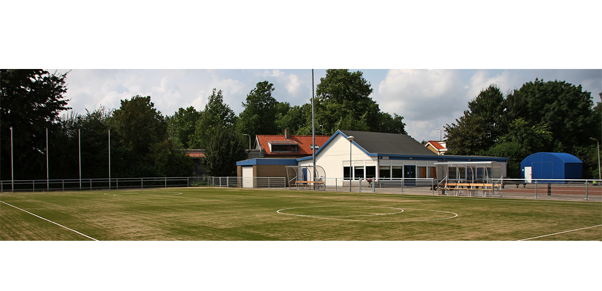

de Vereniging
Korfbalvereniging c.k.c. ADO is opgericht op 6 juni 1950. ADO staat
voor Alles Door Oefening. De vereniging telt enkele honderden leden die
zich wekelijks inspannen voor de korfbal en jeu de boules. Iedere maand
wordt een eigen verenigingsblad (Mikado) verspreid onder 260 adressen. In
de Mikado vind je informatie over activiteiten, competitie, een woord van
het bestuur en veel meer!
de selectie
De selectie van ADO komt uit in de tweede en derde klasse van
het wedstrijdkorfbal. Naast de selectie is een aantal andere teams
actief in het wedstrijdkorfbal. Daarnaast wordt iedere weet fanatiek
aan jeu de boules gedaan.